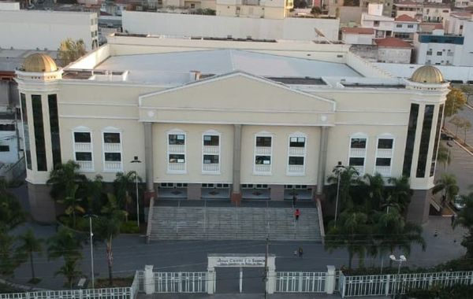
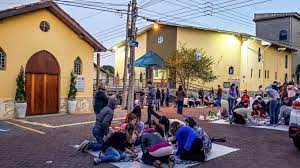
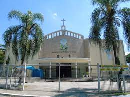
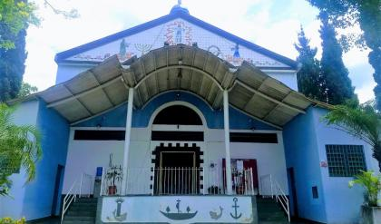

MINHA CIDADE GUARULHOS
IGREJAS
Matriz Catedral Nossa Senhora da Conceição
A primeira igreja (Capela) da cidade de Guarulhos (1560), intitulada de Matriz em 1685 e elevada a Catedral em 1981, com arquitetura barroca eclesiástica, construída em taipa de pilão às margens da Estrada Geral, sofreu diversas modificações e ampliações ao longo dos anos.
Endereço: R. Cap. Gabriel, 1 - Centro, Guarulhos - SP, 07023-070
Telefone: (11) 2409-2101
Cidade: Guarulhos
Início da construção: década de 1665
Religião: Católica
A igreja teve início em 1999, com o apóstolo Rina, na cidade de São Paulo. A primeira reunião se deu em um barracão de uma fábrica de surfwear, cedido por um empresário do ramo.
Endereço: Av. Dr. Timóteo Penteado, 885 - Vila Hulda, Guarulhos - SP, 07093-080
Telefone: (11) 2358-4384

A Igreja Universal foi criada em 1977 pelo Bispo Edir Macedo e desde então se tornou uma das maiores igrejas evangélicas do país e do mundo, estando presente em 129 países.
Endereço: Av. Paulo Faccini, 705 - Macedo, Guarulhos - SP, 07111-000
Telefone: (11) 2790-1177
Santuário São Judas Tadeu

Antes da construção da capela, os fiéis católicos do bairro participavam das celebrações na igreja Santo Antônio de Gopoúva e do Colégio dos Padres, isto entre 1948 até 1956. A doação do terreno, onde hoje vemos com muito orgulho, erguida a nossa aconchegante capela, ocorreu em 30 de agosto de 1953.
Endereço: R. Muniz Freire, 63 - Vila Harmonia, Guarulhos - SP, 07063-001
Telefone: (11) 2451-5802
Paróquia Nossa Senhora de Fátima

Em 1958 foi inaugurada a Igreja São Francisco de Assis e os moradores passaram a frequentá-la, pois era bem mais próxima. As crianças eram catequizadas nas casas dos moradores do bairro e recebiam o Sacramento da Eucaristia nas atuais Paróquias de São Francisco de Assis (Gopoúva) e N.
Endereço: R. Inácio Bitencourt, 204 - Jardim Tranquilidade, Guarulhos - SP, 07052-100

A história da atual Paróquia Santa Mena começa no fim dos anos 60 e começo dos anos 70. Ela foi fundada em 1981, e é atualmente a única paróquia do Brasil que tem a jovem Santa francesa Mena como padroeira.
Endereço: Av. Suplicy, 197 - Jardim Santa Mena, Guarulhos - SP, 07096-000
Telefone: (11) 2455-9434
© 2023 Cidade de Guarulhos. Todos os direitos reservados.